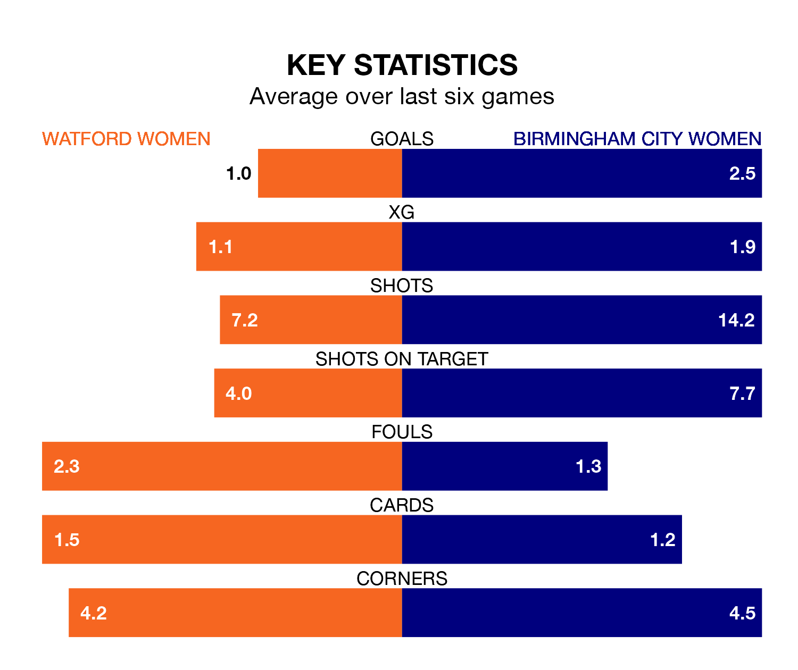

Struggling Watford Women face Birmingham City Women at Grosvenor Vale on Sunday looking to build on a win in their last league outing.
After securing all three points with a 2-0 victory over Durham Women on January 28, Watford sit bottom of the FA Women's Championship.
They travel to play a Birmingham City side fourth in the standings, who also won their last match, 1-0 against London City Lionesses.
Watford are in disappointing form in the FA Women's Championship, with one win and two draws from their last six games.
With six wins and no losses over that period, Birmingham City's form is much better – they have taken 18 points from 18, compared to the hosts' five.
With 24 goals in 13 games so far this season, the Blues are the league's third-highest scorers with 1.8 goals per game. And they are conceding fewer than average, letting in 10 goals at a rate of 0.8 per game.
Watford, meanwhile, are below average scorers, with 1.1 goals per game, compared to a league average of 1.3. They have conceded 2.1 goals per game.
With Lucy Thomas between the sticks, the away team can rely on one of the league's safest pair of hands. She has kept five clean sheets in her 13 appearances this season, and only one other 'keeper – Sunderland Women's Claudia Moan – has been able to prevent the opposition scoring on more occasions in the FA Women's Championship.
In Watford's net, Jacqueline Anne Goldsmid has one clean sheet in five games. She has conceded a goal every 35 minutes, four times as often as the 146 minutes between goals for Thomas.
Updated: 10:40 (UTC), 01/02/24